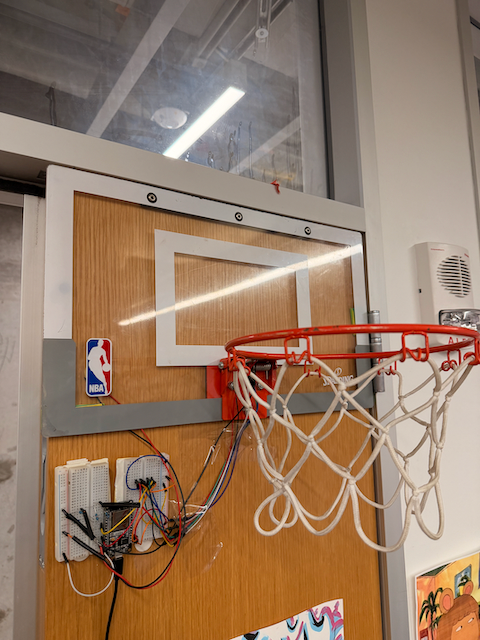
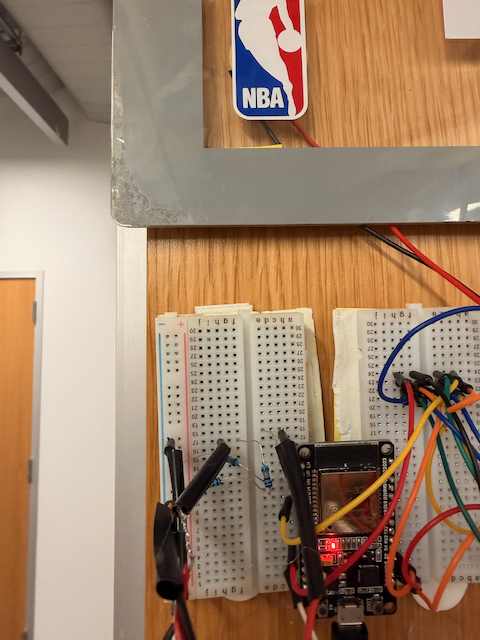
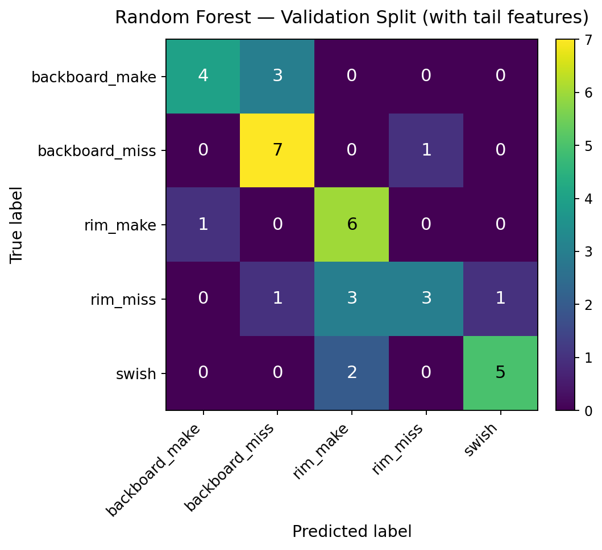
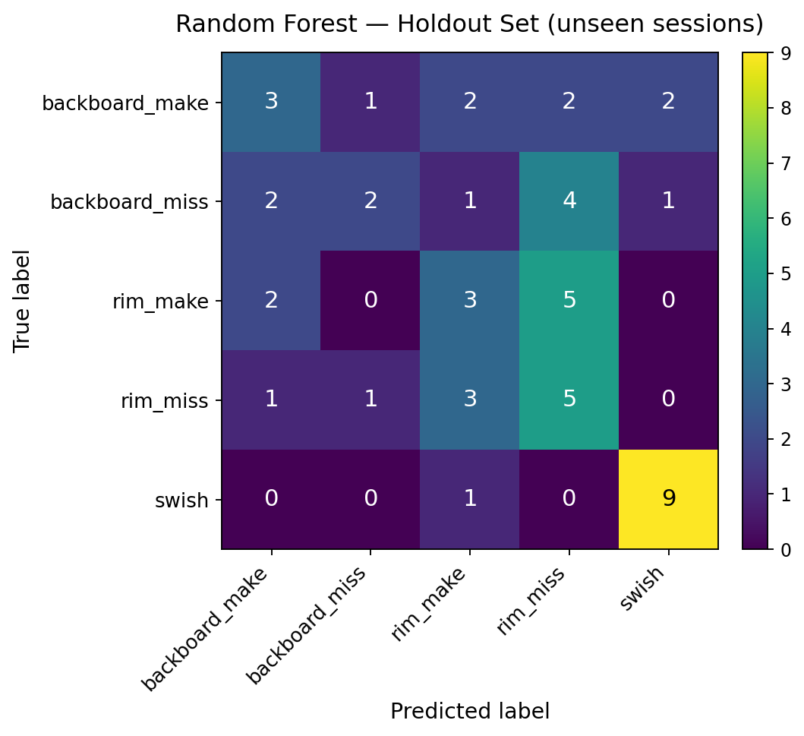

"A rim make and a rim miss sound identical the instant the ball hits — the difference is all in what happens next."
Goal
Classify basketball shot outcomes from sound and vibration alone — no camera, no IR beam-break — using low-cost sensors on a mini hoop.
Role
Multimodal sensing + ML pipeline, in a three-person team (Selin Orbay, Shayan Shabani, Aaron Ragsdale).
Skills
Outcome
Random Forest at 68% validation accuracy (0.67 macro-F1) across five shot outcomes, with a real-time live demo — and an honest holdout set that exposed the generalization gap.
Can you tell a made shot from a miss without seeing the ball? We tried, using only a microphone and two vibration sensors on a mini hoop. The catch: a rim make and a rim miss hit the rim almost identically — the real signal is in the rattle, bounce, and decay that follow. This is the end-to-end sensing-and-ML pipeline we built to hear the difference.

The rig
An INMP441 I2S microphone sits by the net for airborne sound; two piezo discs on the rim and backboard support pick up structural vibration; an ESP32 reads all three together and streams each event to a laptop. We chose dual piezos over an IMU or IR beam-break — cheap, responsive to sharp impacts, and two of them give a left/right energy-balance cue a single sensor can't.

From impact to labeled data
Each shot is a one-second event: the trigger fires at 0.25 s, keeping a short pre-impact
baseline plus 0.75 s of tail, saved as synchronized audio + piezo in one .npz.
We baseline-correct every channel, then extract 63 hand-built time-domain features — peak
energy, six post-impact energy windows, early/mid/late ratios, rattle counts, and two-piezo
balance. The make-vs-miss signal lives in that tail, not in raw loudness.

Reading the make from the miss
We trained six classifiers on the same features (80/20 stratified split); Random Forest won, at 68% accuracy and 0.67 macro-F1. Swish and rim_make came through cleanly. As expected, rim_miss stayed the hardest class — its first impact is nearly identical to a rim make, and even the tail only partly separates them.
| Class | Precision | Recall | F1 | Support |
|---|---|---|---|---|
| backboard_make | 0.80 | 0.57 | 0.67 | 7 |
| backboard_miss | 0.64 | 0.88 | 0.74 | 8 |
| rim_make | 0.55 | 0.86 | 0.67 | 7 |
| rim_miss | 0.75 | 0.38 | 0.50 | 8 |
| swish | 0.83 | 0.71 | 0.77 | 7 |
| macro avg | 0.71 | 0.68 | 0.67 | 37 |

Does it generalize?
The real test was a holdout set from completely unseen sessions. Accuracy dropped hard — 22 correct out of 50 — with almost all errors among the rim/backboard pairs while swish stayed reliable. The gap is the honest read: the 20% split shares sessions with training, so it flatters the model. One hoop and a small dataset don't generalize yet.
What building it actually taught us
Our biggest setback was avoidable. Prepping the live demo, we found the microphone hadn't been recording during our entire first data collection — every model until then had trained on piezo vibration alone. We fixed the wiring, re-collected everything, and the best model flipped from SVM to Random Forest once real audio came back. The lessons stuck: validate your sensors before you collect, feature design beat model choice here, and the "best" model can change the moment the data does.